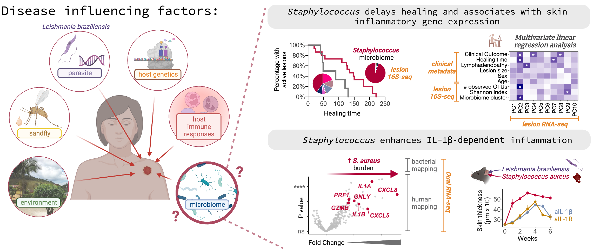
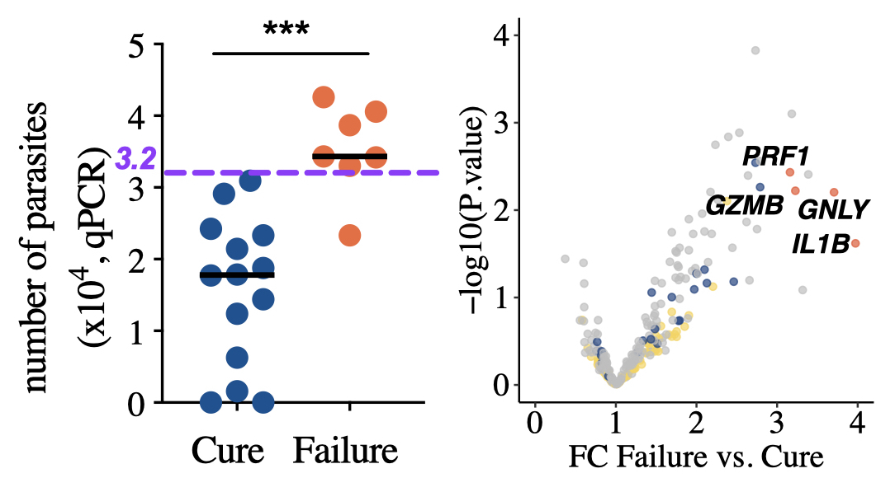
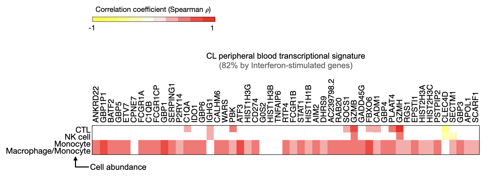

Multi-omics Lead (Principal Scientist)
Century Therapeutics · Philadelphia, PA
Multi-omics computational biologist with experience spanning single-cell genomics, translational biomarker discovery, and AI-augmented analytical workflows — from study design through (pre)clinical readout.
About
I am a computational biologist currently serving as Multi-omics Lead (Principal Scientist) at Century Therapeutics. I work at the intersection of high-dimensional genomics, translational biology, and data science — supporting iPSC-derived cell therapy programs for auto-immune (T1D) and oncology diseases (CAR-NK, CAR-αβT cell, and SC-islet) from early pre-clinical research through IND-enabling studies and into first-in-human trial support.
My work spans the full pre-clinical and translational continuum: in vitro and in vivo omics characterization of cell therapy products, in silico multi-omics integration for biomarker discovery and predictive modeling, and manufacturing analytics for process development and lot release. On the early clinical side, I contribute to PK/PD biomarker strategy, translational pharmacology frameworks, and data packages that bridge pre-clinical findings to clinical success. I thrive in fast-paced, cross-functional biotech environments where scientific rigor, data analytics and operational execution are equally valued.
I integrate AI-based tools and agentic workflows into routine omics operations and data analysis — prioritizing reproducibility, automation, and decisions grounded in well-structured data.
Scope
Design and execute high-dimensional sequencing studies from sample collection through data deliverable. Technologies include scRNA-seq, CITE-seq, spatial transcriptomics, bulk RNA-seq, and whole-genome sequencing — applied across iPSC-derived cell therapy and SC-islet programs.
Multi-omics data integration, dimensionality reduction, differential expression, and supervised ML for clinical outcome prediction. I develop reproducible analytical pipelines and translate findings into actionable scientific and regulatory narratives.
Translating NGS-derived biomarker findings into rapid, scalable molecular assay formats. This includes converting transcriptomic signatures into qPCR and ddPCR panels suitable for manufacturing QC, identity testing, and early clinical monitoring.
Full budget ownership, CRO and technology vendor management, data submission and receipt workflows, and sample inventory coordination across multiple sites. Responsible for contract oversight and ensuring cross-site data comparability.
Managing "wet and dry-bench" professionals and facilitating cross-disciplinary alignment through a company-wide omics forum (20+ scientists). I use agentic coding environments to automate analytical pipelines, data logistics, and reporting workflows — reducing manual overhead and improving reproducibility across projects.
Technical toolkit
Research & Science
A selection of first-author publications demonstrating multi-omics data integration, ML-based clinical prediction, and translational biomarker discovery from complex human datasets.
Featured industry work
Century Therapeutics · Keystone Symposia 2025
Omics lead for the translational characterization behind this program — single-cell and multi-omics profiling of iPSC-derived CAR-αβT cell products, from study design through analysis, supporting the demonstration of antigen-driven expansion and in vivo tumor control.
Selected publications

Science Translational Medicine · 2023
Integrated analysis of host transcriptomics (RNA-seq), microbiome profiling (16S rRNA-seq, WGS), and clinical metadata from a single patient cohort, using multivariate linear regression and supervised ML to identify predictors of clinical outcome. This work reflects my approach to multi-modal omics integration: aligning heterogeneous data types, reducing dimensionality jointly, and extracting clinically meaningful structure under a unified statistical framework.

Science Translational Medicine · 2019
Dual RNA-seq profiling of human skin lesions — simultaneously mapping host transcriptome and pathogen burden — combined with variable gene expression analysis and dimensionality reduction to build a predictive model of treatment response. This was my first publication integrating computational and immunological approaches to clinical biomarker discovery, and it established the analytical framework I continue to refine.

PLoS Neglected Tropical Diseases · 2021
Parallel RNA-seq profiling of tissue (skin lesion) and peripheral blood, coupled with cross-cohort comparison against publicly available disease transcriptomes. The analysis combined linear modeling, statistical inference, and data visualization to isolate disease-specific transcriptional signatures — a cross-tissue, multi-context approach to understanding systemic immune responses.
Background
2024 – present
Century Therapeutics · Philadelphia, PA
Leading the omics program across iPSC-derived CAR-NK, CAR-αβT cell, and SC-islet programs, with responsibility for study design, computational analysis, assay development, and cross-functional coordination.
2017 – 2024
Beiting Lab & Scott Lab · University of Pennsylvania
Multi-omics of infectious disease immunopathology; 5 years as Teaching Assistant for NGS & bioinformatics (DIYtranscriptomics.com).
2011 – 2017
Federal University of Bahia, Brazil
Immunopathogenesis of cutaneous leishmaniasis; clinical cohort design and translational immunology research.
Philadelphia, PA · originally from Salvador, Bahia, Brazil
Contact
Open to scientific conversations and collaborations.